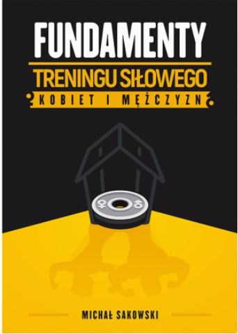
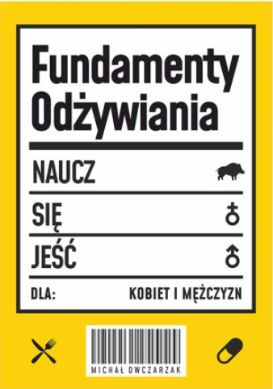

Poza programowaniem moim głownym hobby jest ogólno pojęty zdrowy tryb życia jak i siłownia

W raz z moim stażem treningowym jak i zdobytą w tym okresie wiedzą jestem w stanie polecić darmowy e-book który dobrze sprawdzi się w przypadku gdy dopiero rozpoczynasz swoją przygode
1.  2. 